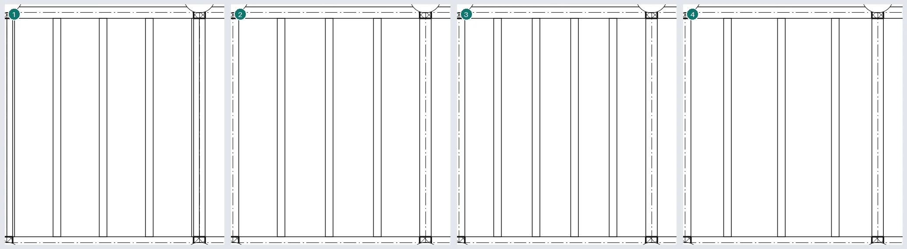
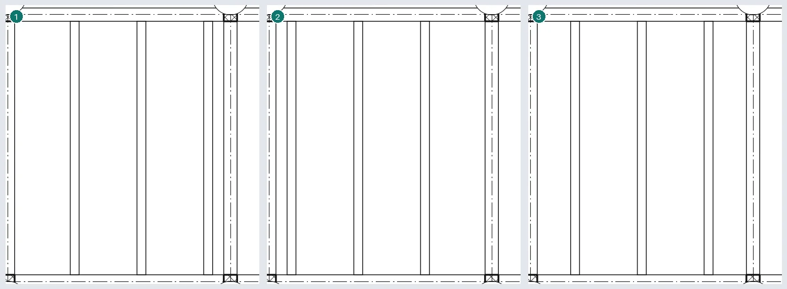
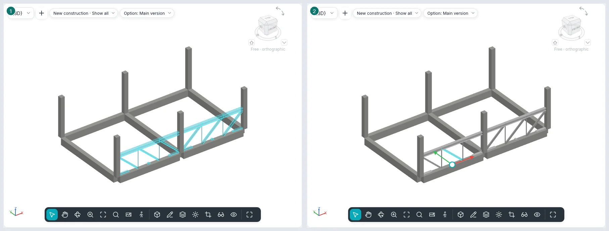
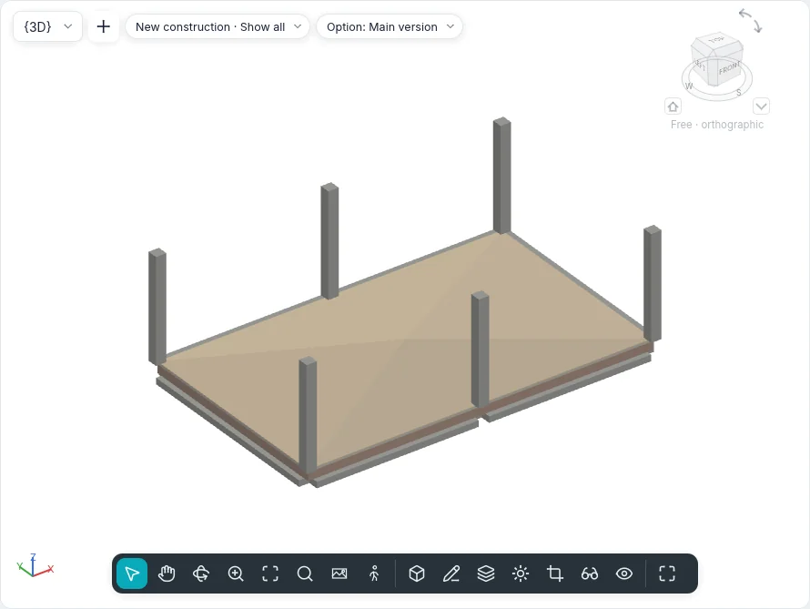
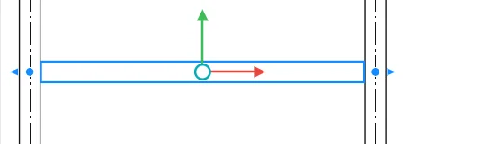
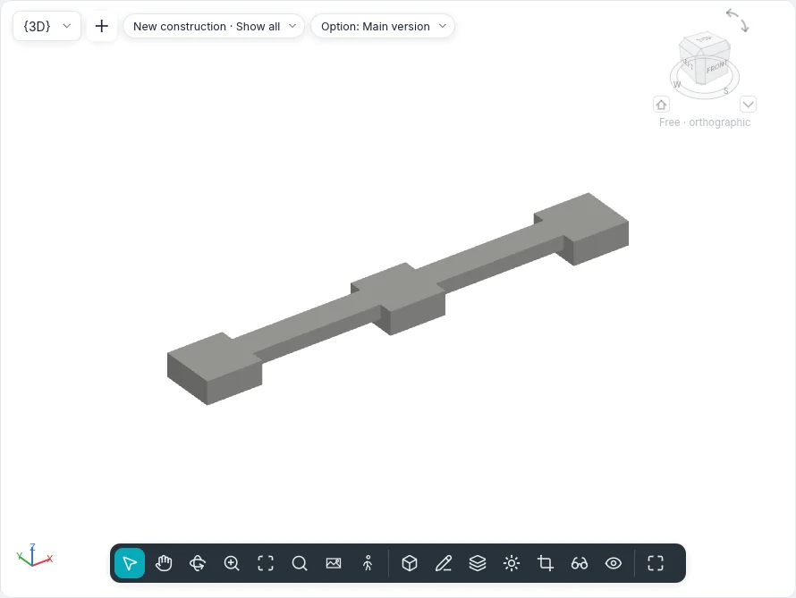
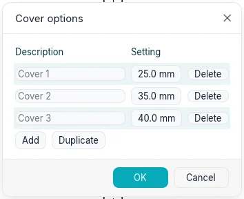
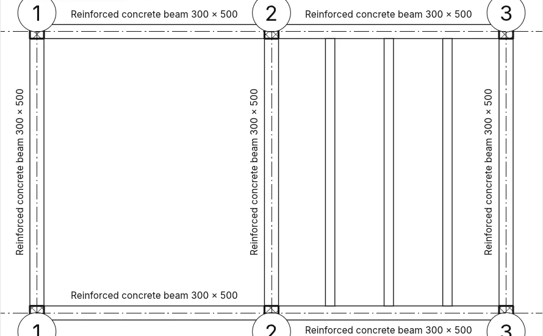

Structure and foundations
The Structure tab (in the BIMopen style: Create ▸ Structure) gathers the elements that carry the building: beams, braces, beam layouts, trusses, structural walls and floors, structural columns, pad footings, strip footings and raft foundations. Beams, braces and the members of trusses are one category, Structural framing; pad footings, strip footings and raft foundations are Structural foundations. The same tools work in plans, sections, elevations and 3D views, where the view allows it.
Structural framing types
Beam and brace types are BIMopen parametric sections, like those of structural columns. Section shape picks the shape: Rectangular (concrete or timber), Round, I-shape (also with unequal and sloped flanges), Rectangular hollow section, Circular hollow section, Angular, C-channel (also with a lip) and T-shape. Type Parameters shows only the dimensions of the chosen shape and computes, read-only, the Structural analysis properties: area, paintable perimeter, nominal weight (from the material's density), moments of inertia, elastic and plastic moduli, torsional and warping constants, shear areas and the angle of the principal axes. Section name key keeps the name of the commercial profile.
A new project has reinforced concrete beams, IPE, HEA, HEB and UPN profiles, angles, T-sections, hollow sections and glued laminated timber beams.
Beam
Structure ▸ Beam opens the Place beam card. Two clicks make a beam: the ends snap to the centre of structural columns, to the axis of bearing walls, to the ends and the line of other beams and to grid intersections, and the status bar says to what. The options strip has:
| Option | What it does |
|---|---|
| Placement plane | The level of the view, on which the beam is laid |
| Structural usage | |
| 3D Snapping | The ends snap to structural elements off the work plane: a sloped beam |
| Chain | The end of one beam is the start of the next; Esc ends the chain |
| Tag on Placement | Every beam is placed with its tag |
Multiple ▸ On Grids: click the grids and End (or Enter); on each grid a beam is made for every span between the supports that cross it. A wall standing on the grid gets no beams; beams already there are not doubled.
In a section or an elevation the beam is drawn in the plane of the view, with its ends on the structural elements clicked; in 3D on the level under the cursor, or with 3D Snapping on the element.
Beam properties
| Group | Properties |
|---|---|
| Constraints | Reference level, Work Plane, Start level offset and End level offset (a sloped beam), Orientation (Normal, Horizontal), Cross-section rotation |
| Geometric position | Start extension/End extension (free ends), Start join cutback/End join cutback (joined ends, steel and timber), yz Justification (Smooth or Independent), y Justification/z Justification with their Offset value, also for start and end |
| Materials and Finishes | Structural material |
| Structural | Structural usage, Stick symbol location, Start attachment type/End attachment type, Start attachment distance/End attachment distance and reference column (above or below) for each end, Start connection/End connection (Moment frame, Cantilever moment), Camber size, Number of verticals, Beam seated at start/end on a structural wall, Maximum weight, Exact weight, Painted area |
| Dimensions | System length, Cut length, Volume, Elevation at top and Elevation at bottom («Varies» on a sloped beam) |
| Structural analysis | Start release/End release (Fixed, Pinned, Bending moment, User defined with the six constraints), Analyze As |
A selected beam has Reverse Ends and, for each end, Disallow Join.
How it is drawn
- Coarse: a line, with the line style of its usage (Styles by Category ▸ Structural framing ▸ Girder, Joist, Purlin…), held back from the columns and beams it joins by the Cut symbol distance. In sections and elevations beams are lines too, with the moment symbols.
- Medium and Fine: the outline of the section. In a plan whose Discipline is «Structural» the beams covered by a floor are dashed; in an «Architectural» plan they are not shown.
- In sections the beam is cut with its material's pattern.
Joins
A beam stops at the face of the column and of the bearing wall it rests on (never at a non-bearing wall); between beams the join is a tee (the beam that runs through stays whole) or a corner between two beams of the same type in the same plane. Concrete becomes a single mass: the column wins over the beam, floors and walls keep their shape, and a beam under a concrete floor stops at its underside.
Structure ▸ Framing ▸ Beam/Column Joins shows an arrow at each joined end: towards the join, that beam is cut; a click reverses it. The options strip filters by material (Steel, Wood, Precast concrete, Other).
Brace
Structure ▸ Brace:
- in a Framing Elevation (or in a section), two clicks on structural elements, for example the base of a column and a beam;
- in plan, with Start level, Offset, End level, Offset on the options strip;
- in 3D, on the points of the elements clicked.
An end laid on a beam stays attached at a Ratio (from 0 to 1) or a Distance along it, from its start or its end: if the beam moves or gets longer, the brace follows it. Structural usage: Vertical bracing, Kicker bracing, Web, Other.
Plan symbols and Structural Settings
Structure ▸ Framing ▸ Structural Settings sets, on paper:
- the Cut symbol distance of braces, beams and trusses, and columns;
- the Brace symbols: Parallel line (with its offset) or Angled line, Show brace above and Show brace below (also dashed), Kicker brace symbol;
- the Connection symbols of beams and braces.
The symbols show at the Coarse detail level.
Beam layout
Structure ▸ Beam layout fills a bay with parallel beams:
- Automatic beam layout: one click in a bay closed by beams or bearing walls;
- Sketch beam layout: the boundary in sketch mode (Create beam layout boundary) with Pick Supports (the boundary stays tied to the beams and walls clicked, and the first gives the direction), Line, Rectangle, Pick Lines and Beam direction. An inner loop is an opening.
Layout rule: Fixed distance, Fixed number, Maximum spacing, Clear spacing; with the first and the last, Justification (Start, End, Center, Direction line). Beam type, Elevation and Tag on Placement (one tag for the layout or one per beam) complete the options.
The beams follow the supports when they move. A selected beam layout has Reset System (beams that were changed go back to the layout) and Remove Beam Layout (the layout goes, the beams stay).
The layout rules space the beams as Array spaces its copies: Fixed number like Last, Fixed distance like 2° from the Justification; with Clear spacing the gap is between the faces, and a beam of a bigger type pushes its neighbours away. 3D in the options bar makes the system non-planar: the beams' ends rise to the slope-defining supports (beams always, walls with Defines Slope or Defined slope walls). Edit Boundary opens the sketch again; Beam direction is drawn or picked with Pick Lines. A beam deleted by hand stays deleted until Reset System. Outside a closed bay, Automatic beam layout opens the boundary sketch.


A beam system copied, mirrored or pasted associates itself with the beams and bearing walls its edges fall on in the new place; when an edge finds no support the command warns, and Edit Boundary ▸ Pick Supports associates it again. Copy it only between bays with the same shape and the same supports.
Curved beams and curved bearing walls also close a bay for an automatic beam system, but the beams' direction always comes from a straight support. A beam system sketched over more than one bay is still made, with a warning: the beams and walls across it do not divide it, so one beam system per bay is better.
Truss
Structure ▸ Truss: two clicks in plan lay the type's pattern (Pratt, Howe, Warren, Warren with verticals, Fink) over the span. The chords are beams, the webs are braces, each of the type of its group (Top chords, Vertical webs, Diagonal webs, Bottom chords). The properties include Truss height, Bearing chord, Maximum panel width, Number of panels and the rotation.
A selected truss has Attach Top/Bottom (the chord follows the face of a roof or a structural floor; with Shift the bottom chord), Detach Top/Bottom, Reset Truss and Remove truss (the members stay as beams and braces).
Edit Profile opens a section or elevation parallel to the truss (when the open view is not, Go to View asks which) with the chords' lines in sketch mode: the lines above the middle are the top chord, the others the bottom chord, and the webs follow them. Reset Profile brings the chords back to the layout's line. In a 3D view the lines are drawn straight on the truss's plane, without changing view.
With Pick Lines the truss is placed along a beam, a wall or a grid. A click on a member selects the whole truss; Tab goes on to the single member. An attached chord follows the host's face along the whole span; with the bearing chord attached, the other keeps the Truss height from it, and the drawn profile stays and comes back with Detach Top/Bottom. Bearing vertical justification, Non-bearing offset, Web orientation (Orthogonal: the verticals square to the bearing chord) and Rotation angle (the truss's plane turns about the location line) change the members. A member deleted by hand stays deleted until Reset Truss; the members are cut only in Structural Settings. New layouts drawn in their own component will come with the component editor.

With Webs have cut symbols in the truss type, at coarse detail the webs stop short of the chords by the braces' Cut symbol distance from Structural Settings.
Structural wall and structural floor
Structural wall is the Wall tool with the same types and the same options strip: the wall is made Bearing. Every wall has Structural and Structural usage (Non-bearing, Bearing, Shear wall, Structural combined).
Structural floor is the floor with Structural ticked. In the sketch, Span direction draws the direction of its span; at the end the Span direction symbol is placed at the centre of the floor. Annotations ▸ Span direction places it again (with Automatic placement at the centre); selected, it can be turned, and Align perpendicular makes it perpendicular to an edge, a beam or a grid.
Shape editing
A selected floor (structural, a slab foundation or any floor) has the Shape Editing panel:
- Modify Sub Elements: click a corner or a point, then type its Elevation in the options bar; Del removes the point.
- Add Point: a point inside the floor at the elevation given; with Relative it is added to the surface's height there.
- Add Split Line: two clicks; the surface creases along the line.
- Pick Supports: click a beam under the floor; a split line follows the beam, at its top.
- Reset Shape: removes the points and lines; the floor is flat again (or keeps its slope).
The top becomes the triangulated surface through these points; the whole slab follows it and keeps its thickness. Elevation at Top and Elevation at Bottom then show Varies.

Foundations
| Tool | How it works |
|---|---|
| Pad footing | One click in plan or in 3D (space bar: turn), or At Grids or At Columns and End. The top face is at the level plus Height Offset From Level; the column above rests on the footing. Moves with grids ties it to the grids |
| Strip footing | One click on a structural wall: the footing runs under its base and follows it. Bearing: Width and Eccentricity; Retaining: Outer side width and Inner side width. It breaks under doors and windows that touch the base, unless Do not break at inserts; at free ends it projects by the Default end extension length |
| Raft foundation | The boundary in sketch mode (Create raft boundary), like a floor: it lies under its level, down by the thickness of its layers. Structural usage: Foundation or Foundation slab |
With a wall foundation selected, the filled circles at its ends lengthen or shorten it along the wall, snapping to what is near; the circles at the ends of a beam or a brace do the same. On steel, precast concrete and timber beams, the arrows beyond the ends change Start/End extension at a free end and Start/End join cutback at a joined one. Concrete pads and wall foundations that touch are one mass: the pad keeps its shape and cuts the wall foundation (of two pads, the earlier cuts the other), and no line is drawn between them in plan.


Rebar cover
Reinforced concrete ▸ Cover options lists the project's covers, each with a name and a distance: Add, Duplicate, Delete. Elements that used a deleted cover take the first one. Structural walls, pillars, concrete beams and braces, structural floors, slab foundations, isolated and wall foundations choose their cover in Properties: Rebar cover - Top face, Rebar cover - Bottom face and Rebar cover - Other faces (on walls Rebar cover - Exterior face, Rebar cover - Interior face and Rebar cover - Other faces).

Views, tags, schedules and IFC
- A view's Discipline: Architectural or Structural. The second hides non-bearing walls and dashes what floors cover.
- Annotations ▸ Beam tags: framing tags and elevations on all the beams of the plan (or on the selected ones) in six positions, above and below, at the start, the middle and the end; Display elevation picks top, bottom, both or actual.
- A beam's tag reads along the beam and stands beside it, on the side where it covers no other beam (above, when both are free); it is dragged like any tag. In Beam tags ▸ Settings, Horizontal end offset moves the start and end positions towards the middle and Vertical offset keeps the annotations away from the beam's side.
- Schedule/Quantities has the categories Structural framing, Beam layouts, Trusses and Structural foundations, with every parameter as a field.
- In IFC girders, joists and purlins are exported as
IfcBeam, braces and members asIfcMember, trusses asIfcElementAssembly, pad and strip footings asIfcFooting, the raft as a baseIfcSlab; structural walls and floors carryLoadBearing.

From the command line
| Command | What it does |
|---|---|
beam |
Beams from two points, in a chain, as an arc or on grids |
brace |
A brace between two points |
beamsystem, beamsystemedit |
An automatic beam layout or one from a boundary; reset it or remove it |
truss, trussedit |
A truss; attach it, detach it, reset it or remove it |
pad, strip |
Pad footings (at a point, on grids, under columns), strip footings |
spansymbol, spanalign |
The span direction symbol; align it |
beamjoin, structuralsettings, beamannotations |
Joins, structural settings, beam tags |
floorshape |
A floor's shape editing: points, split lines, supports, reset |
covers |
Rebar cover settings |